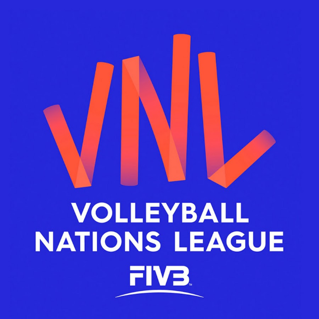

VOLEIBOL
¿Qué es y en qué consiste?
El voleibol es un deporte colectivo que se juega entre dos equipos de seis jugadores cada uno. El objetivo es pasar el balón por encima de una red y hacerlo caer en el campo del equipo contrario, evitando que el otro equipo haga lo mismo.
Reglas básicas:
- El balón debe pasar por encima de la red y caer en el campo contrario sin tocar el suelo fuera de los límites.
- Cada equipo tiene un máximo de tres toques para devolver el balón al campo contrario.
- Un punto se anota cuando el balón toca el suelo del equipo contrario.
- Los partidos se juegan al mejor de 5 sets.
El voleibol fue inventado en 1895 por William G. Morgan en Massachusetts, EE.UU., como una alternativa menos intensa al baloncesto.
¿Cómo se juega?
Dos equipos compiten en una cancha rectangular dividida por una red.
Ligas más importantes
-
VNL (Volleyball Nations League): torneo anual con los mejores equipos nacionales masculinos y femeninos.
 -
Liga de Campeones CEV (Europa): competencia de clubes.

-
Campeonatos continentales

Campeonatos y equipos líderes de campeonatos
-
Campeonato Mundial FIVB
Equipos más ganadores
-
Rusia: 6 títulos.
-
Brasil: 4 títulos.
-
Japón: 3 titulos
-
Cuba: 3 titulos

-
-
Juegos Olímpicos
Equipos más ganadores
-
Rusia: 4 oros.
-
Cuba: 3 oros consecutivos
-
Regresar